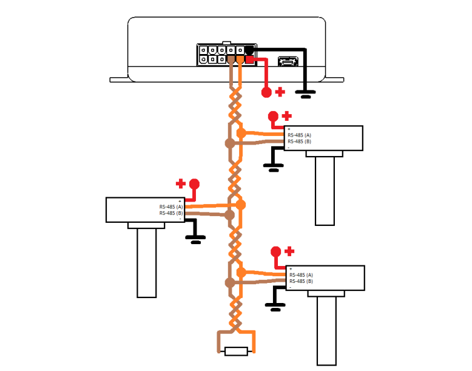
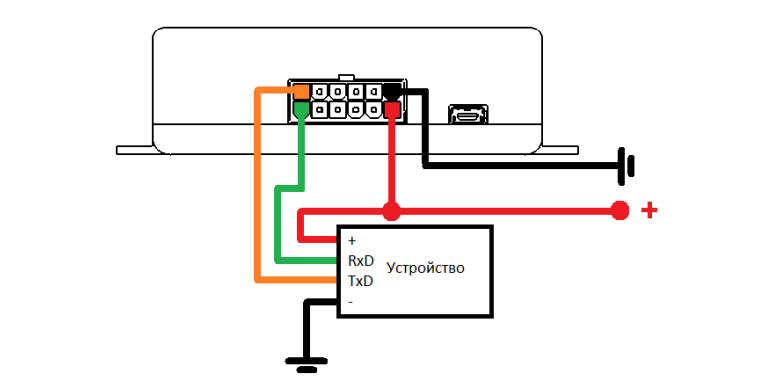
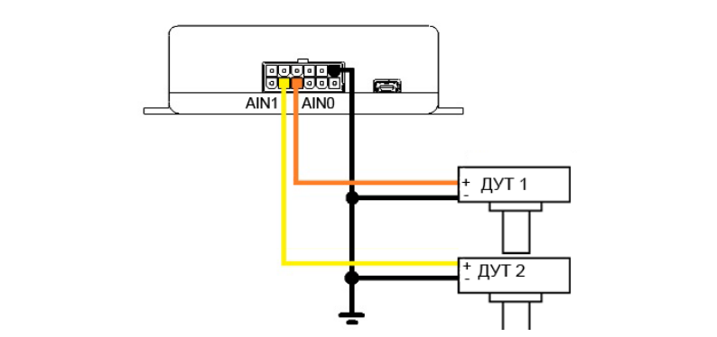
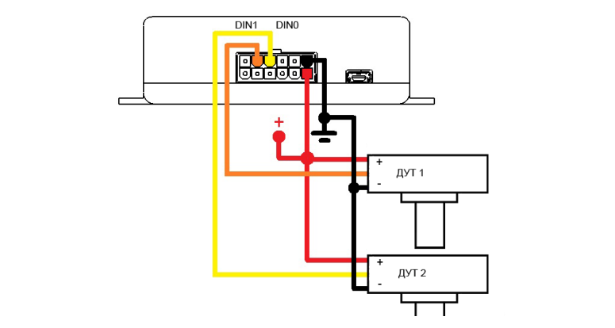
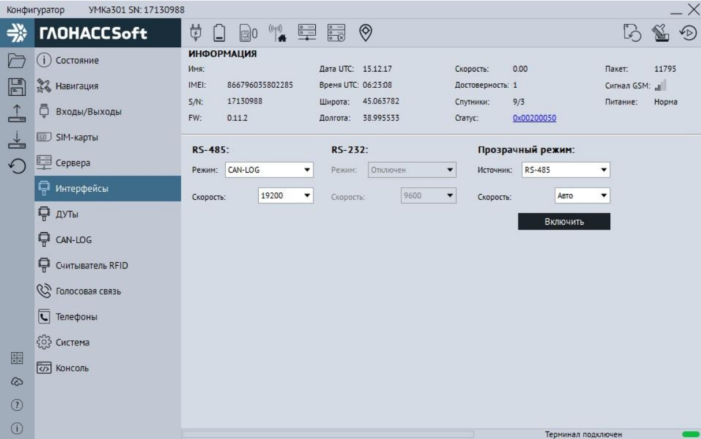
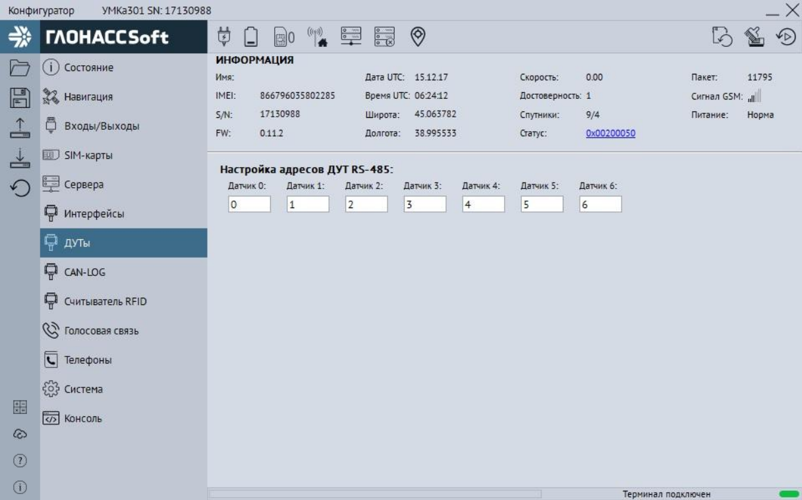
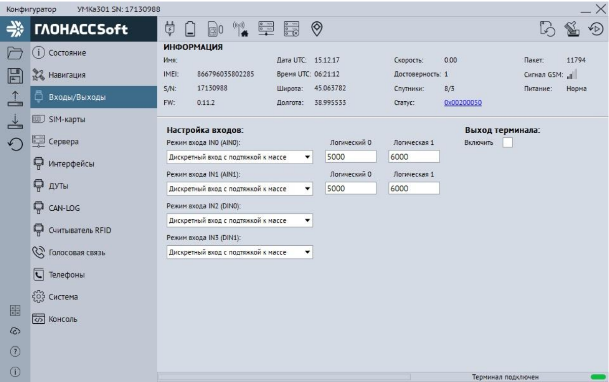

Подключение ДУТ по RS-485
К терминалу может быть одновременно подключено до 7 и более датчиков уровня топлива (ДУТ) с протоколом LLS. Резистор на конце шины — 120 Ом. Используйте кабель «витая пара».

- Ответвления от шины RS-485 к датчикам должны быть как можно короче, для согласования с импедансом шины. А для предотвращения коллизий на шине, рекомендуется заранее назначить каждому устройству свой уникальный адрес.
Внимание! При работе с датчиками уровня топлива необходимо строго
придерживаться требований соответствующей эксплуатационной
документации
Подключение ДУТ по RS-232

- К терминалу можно подключить 1 дополнительный ДУТ по RS-232 (опция, указывается при заказе).
- Интерфейс поддерживает протокол LLS.
Поддержка RS-232 — опция, уточняйте при заказе.
Подключение ДУТ в аналоговом режиме

- Используются аналоговые входы AINO и AIN1.
- Можно подключить до двух дополнительных датчиков.
Подключение ДУТ в частотном режиме

- Используются цифровые входы DIN0 и DIN1.
- Можно подключить до двух дополнительных датчиков.
После подключения настройте режимы входов в конфигураторе (см. вкладка «Входы/Выходы»).
Настройка ДУТ при помощи конфигуратора УМКа3xx
- Откройте конфигуратор, подключите терминал к ПК.
- Подайте питание на терминал.
- В конфигураторе нажмите «Подключить».
- Для загрузки текущей конфигурации нажмите «Загрузить».
- Приступайте к настройке ДУТ.
Внимание! Допускается подключение терминала к ПК без основного
напряжения питания с целью конфигурирования. При таком подключении
напряжение питания не поступает на GSM модем и передача данных о
текущем местоположении не производится.
Вкладка «Интерфейсы»

- Выберите тип устройства и режим интерфейса (RS-485 или RS-232).
- Укажите рабочую скорость интерфейса.
«Прозрачный режим» позволяет использовать терминал как переходник USB-RS232/485 для связи с устройством напрямую.
В «прозрачном режиме» терминал не отвечает на команды, а только ретранслирует их. Для выхода — отключите USB.
Вкладка «ДУТы»

- Используйте для настройки и получения информации от ДУТ по RS-485.
- Адреса датчиков указываются в поле «Настройка адресов ДУТ RS-485».
- Конфигуратор показывает подключённые датчики и их параметры.
На вкладке «Интерфейсы» переведите интерфейс в режим «ДУТ по LLS», скорость — 19200, запишите настройки.
Вкладка «Входы/Выходы»

- Используется для настройки аналоговых и цифровых входов для ДУТ.
- Уровни логического 0 и 1 настраиваются в диапазоне 0–40000 мВ.
Удалённое конфигурирование ДУТ Эскорт с помощью УМКа3xx
- Откройте конфигуратор Эскорт версии 2.6.2+ и выберите команду для отправки (например, «Установить режим»).
- Настройте параметры, нажмите «Сгенерировать запрос».
- Скопируйте запрос и вставьте в поле ввода команды в конфигураторе УМКа3xx или на платформе ГЛОНАССсофт.
- После отправки команды получите ответ, который можно расшифровать в конфигураторе Эскорт («Читать из файла»).
- Откройте .log файл, вставьте команду и ответ, сохраните и выберите для считывания.
В окне появятся надписи «след. запись» и «записей больше нет», нажмите «ОК» для просмотра текущей конфигурации ДУТ.
Настройка BLE-режимов терминалов УМКА
Для работы с BLE терминал УМКА может быть настроен в один из двух режимов: приемник или маяк.
Режимы работы
- Режим приемника — терминал отслеживает события от BLE-маяков, указанных в группе. Используется для отслеживания местоположения грузов или контроля доступа.
- Режим маяка — терминал сам транслирует BLE-сигналы (например, координаты, идентификатор) для других устройств. Используется для передачи информации о местоположении или идентификаторе терминала.
Пошаговая настройка
- Запустите конфигуратор УМКА.
- Выберите вкладку «Идентификатор BLE».
- Укажите режим работы терминала: приемник или маяк.
- Если выбран режим приемника, настройте список отслеживаемых маяков.
- Если выбран режим маяка, настройте параметры транслируемых данных.
- Сохраните настройки.
Примеры использования
Отслеживание грузов: К грузам крепятся BLE-маяки. Терминалы УМКА на транспорте работают в режиме приемника и отслеживают сигналы этих маяков, что позволяет видеть местоположение грузов в реальном времени.
Контроль доступа: BLE-маяки устанавливаются на входах в зоны. Терминалы УМКА на сотрудниках работают в режиме маяка и передают идентификатор сотрудника. Система, принимающая эти сигналы, автоматически предоставляет доступ в нужные зоны.
Подробнее о BLE и настройках терминалов УМКА читайте в официальной документации.